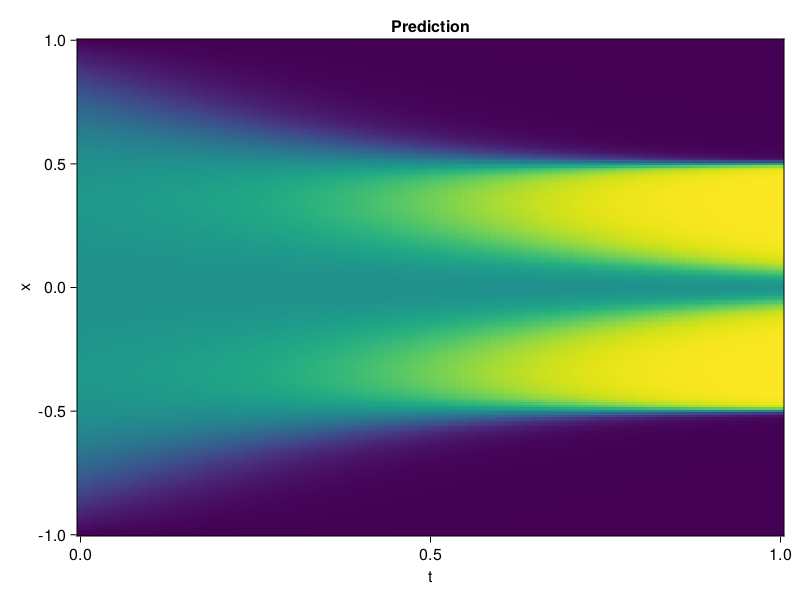

Allen-Cahn Equation with Sequential Training
In this tutorial we are going to solve the Allen-Cahn equation with periodic boundary condition from $t=0$ to $t=1$. The traning process is split into four stages, namely $t\in [0,0.25]$, $t\in [0.0,0.5]$, $t\in [0.0,0.75]$ and $t\in [0.0, 1.0]$.
using ModelingToolkit, IntervalSets
using Sophon
using Optimization, OptimizationOptimJL
@parameters t, x
@variables u(..)
Dₓ = Differential(x)
Dₓ² = Differential(x)^2
Dₜ = Differential(t)
eq = Dₜ(u(x, t)) - 0.0001 * Dₓ²(u(x, t)) + 5 * u(x,t) * (abs2(u(x,t)) - 1.0) ~ 0.0
domain = [x ∈ -1.0..1.0, t ∈ 0.0..0.25]
bcs = [u(x,0) ~ x^2 * cospi(x),
u(-1,t) ~ u(1,t)]
@named allen = PDESystem(eq, bcs, domain, [x, t], [u(x, t)])\[ \begin{align} - 0.0001 \frac{\mathrm{d}}{\mathrm{d}x} \frac{\mathrm{d}}{\mathrm{d}x} u\left( x, t \right) + 5 \left( -1 + \left|u\left( x, t \right)\right|^{2} \right) u\left( x, t \right) + \frac{\mathrm{d}}{\mathrm{d}t} u\left( x, t \right) =& 0 \end{align} \]
Then we define the neural net, the sampler, and the training strategy.
chain = FullyConnected(2, 1, tanh; hidden_dims=16, num_layers=4)
pinn = PINN(chain)
sampler = QuasiRandomSampler(500, (300, 100))
strategy = NonAdaptiveTraining(1, (50, 1))
prob = Sophon.discretize(allen, pinn, sampler, strategy)OptimizationProblem. In-place: true
u0: ComponentVector{Float64}(layer_1 = (weight = [-1.3218462467193604 -0.21366924047470093; -1.950208067893982 0.4753294885158539; … ; 1.106144905090332 -0.3967006802558899; -0.8510573506355286 -1.8982034921646118], bias = [0.0; 0.0; … ; 0.0; 0.0;;]), layer_2 = (weight = [0.3710043430328369 -0.166544571518898 … -0.11026302725076675 0.18084797263145447; 0.21051418781280518 -0.5425063371658325 … 0.2138529121875763 0.18081003427505493; … ; -0.1654919683933258 -0.2691967785358429 … -0.6234456300735474 -0.5482879281044006; 0.25217142701148987 -0.45787882804870605 … -0.397148072719574 -0.20498327910900116], bias = [0.0; 0.0; … ; 0.0; 0.0;;]), layer_3 = (weight = [0.674802303314209 0.6518605947494507 … 0.5872997045516968 -0.516870379447937; 0.47375351190567017 0.6152576804161072 … 0.053564660251140594 0.20710834860801697; … ; -0.15451465547084808 -0.43779441714286804 … 0.09596272557973862 -0.27867433428764343; -0.3001580238342285 0.4851701259613037 … -0.6579815149307251 0.6316545605659485], bias = [0.0; 0.0; … ; 0.0; 0.0;;]), layer_4 = (weight = [0.46314337849617004 0.656391978263855 … -0.3958037197589874 -0.27986398339271545; 0.23009228706359863 -0.31999579071998596 … -0.20660161972045898 0.6800968050956726; … ; -0.06377217173576355 0.5217780470848083 … 0.23189491033554077 0.13359461724758148; 0.544971227645874 -0.2145995795726776 … -0.05924439802765846 0.1477115899324417], bias = [0.0; 0.0; … ; 0.0; 0.0;;]), layer_5 = (weight = [-0.07434961944818497 0.6462014317512512 … -0.23923979699611664 -0.312756210565567], bias = [0.0;;]))We solve the equation sequentially in time.
function train(allen, prob, sampler, strategy)
bfgs = BFGS()
res = Optimization.solve(prob, bfgs; maxiters=2000)
for tmax in [0.5, 0.75, 1.0]
allen.domain[2] = t ∈ 0.0..tmax
data = Sophon.sample(allen, sampler)
prob = remake(prob; u0=res.u, p=data)
res = Optimization.solve(prob, bfgs; maxiters=2000)
end
return res
end
res = train(allen, prob, sampler, strategy)u: ComponentVector{Float64}(layer_1 = (weight = [-1.501435889934928 -0.3761742125681935; -2.931475537349479 0.178900101029486; … ; 1.4254306138177428 -0.07702058238106296; -0.7790716770796586 -1.5846189050080703], bias = [0.012882663171109627; -0.0864449855205518; … ; -0.5006838115868106; -1.2509505137916528;;]), layer_2 = (weight = [0.4448936611107002 -0.05831799178682418 … -0.10230908592822899 0.08050996260679043; -0.19773375307056743 -1.5923114575082398 … 0.003541044587118819 1.0324457974177368; … ; 0.18338049758538058 -0.07286445003271697 … -0.6877095996048914 -0.49316365433272047; 0.30562923334291525 -1.0382955565029282 … -0.25501534650979013 -0.13032062865282978], bias = [-0.2985275412091763; 0.22996525253837422; … ; -0.13774464832889738; -0.05222061343431857;;]), layer_3 = (weight = [0.44031408615204704 0.36374717369436416 … 0.42473231031094605 -0.9768280705644687; 0.7446822831045508 0.595558546337804 … 0.031982130188059 0.17781577296697965; … ; 0.12499632765680835 -1.077957239475571 … 0.1032425607719237 -0.33195604802075235; 0.16041325366325196 0.9828361403596932 … -1.1068166537803559 0.22014127815612883], bias = [-0.10878573591677143; -0.10068624492910537; … ; 0.1215291965080985; -0.5345987762293799;;]), layer_4 = (weight = [0.4281538938552929 0.6376088459435905 … -0.6160015850292647 -0.20257652026806053; 0.3016299075410245 -0.6625612698470693 … -0.4574096154013772 0.62683325629169; … ; -0.5752919596503332 0.3480710472711392 … 0.2699472775996737 0.3934425417187443; 0.3328686076791233 0.12590641580578343 … -0.03132210945253525 0.056261509506816694], bias = [0.07789019327961602; -0.831380721871152; … ; -0.09194754963161943; 0.15197545757136122;;]), layer_5 = (weight = [0.01942215172959458 0.9084575271095153 … -0.19962153002193256 -0.27027422406413043], bias = [-0.6108489613045419;;]))Let's plot the result.
using CairoMakie
phi = pinn.phi
xs, ts = [infimum(d.domain):0.01:supremum(d.domain) for d in allen.domain]
axis = (xlabel="t", ylabel="x", title="Prediction")
u_pred = [sum(pinn.phi([x, t], res.u)) for x in xs, t in ts]
fig, ax, hm = heatmap(ts, xs, u_pred', axis=axis)